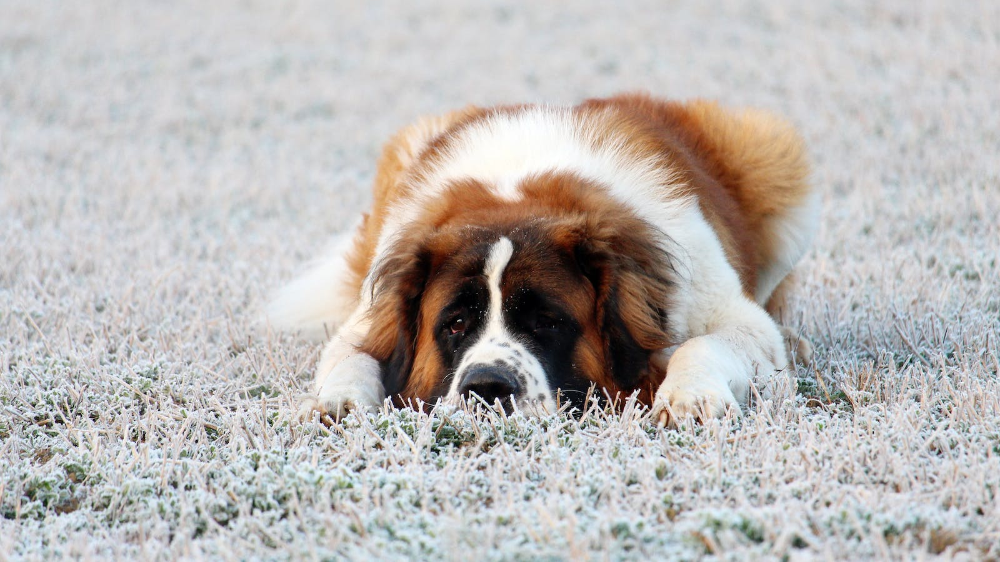

In this lecture we will understand control flow in templates with flask
As usual we will take puppies as an example. This is because they are cute, duhh?!

{% for pup in puppies %}
We have the following puppies living with us
- {{pup}}
{% if 'Rufus' in pup %}
Rufus, there you are!
{% else %}
Ohh Rufus, where are you?
{% endif %}
{% endfor %}